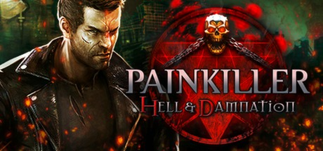

События Hell and Damnation разворачиваются после дополнения Painkiller: Overdose, тем самым игнорируя события Resurrection, Redemption и Recurring Evil. Дэниел Гарнер, прошедший через мясорубку в борьбе против армии Люцифера, оказался обманут силами Рая и Ада и остался в Чистилище, без какой-либо возможности выбраться оттуда и окончательно потеряв надежду снова увидеть свою жену Кэтрин. Однажды, когда Дэниел сидит на кладбище, к нему внезапно является сам Жнец и предлагает сделку: если Дэниел соберёт для него 7 тысяч душ, то Жнец позволит ему отправиться в Рай, к жене. Дэниел сомневается в сделке, однако соглашается, когда Жнец говорит ему, что тот слишком опасен для Чистилища. Жнец оставляет ему особое оружие — «Ловец душ» (англ. Soulcatcher) и исчезает.
Неожиданно, Дэниел встречает свою старую знакомую — Еву, которая заявляет ему, что Жнец обманывает его, однако после её собственного предательства, произошедшего в финале Battle Out of Hell, Дэниел относится к ней с недоверием и игнорирует её слова. На протяжении игры Ева всё время пытается убедить Гарнера, что всё вокруг не то, чем кажется, и единственной причиной, по которой Дэниел настолько успешно уничтожает демонов и не подчиняется их власти, является то, что он на самом деле не умер.
Наконец, после убийства грозных Некрогиганта, Болотной твари и Аластора, Дэниел встречает Жнеца и отдаёт ему «Ловец душ», однако тот заявляет, что собрано всего лишь 6999 душ, и для завершения сделки не хватает всего лишь одной, прямо намекая герою на Еву. Дэниел отказывается убивать Еву, хотя та соглашается на смерть. Тогда Жнец сам убивает девушку. При помощи «Ловца душ», Дэниел начинает сражение с ним и, ценой огромных усилий, побеждает Жнеца. На месте убитого появляется портал, куда Дэниел немедленно отправляется. «Ловец душ» остаётся в Чистилище.
После этого герой просыпается и с удивлением обнаруживает, что он жив и находится в больничной палате, частично парализованный. Оказывается, всё это время он находился в коме и был вынужден сражаться с армией демонов в Чистилище по вине Жнеца. В это время перед ним появляется Ева. Девушка говорит, что Жнец вовсе не умер, а вновь отправился в Ад. Плюс ко всему, с помощью имеющихся у него 7000 душ, он освободит своих братьев, ужасных Всадников Апокалипсиса: Войну, Мор, Голод и Смерть, и вместе с ними начнёт Судный день на Земле. Ева просит героя противостоять им, но Дэниел сомневается в том, что вновь способен сразиться со Злом без тех сил, что были у него в Чистилище. Тогда Ева успокаивает его и говорит, что задачей Дэниела будет лишь помогать в нелёгкой борьбе и быть союзником некого воина. В этот момент дверь в палату открывается и на фоне яркого света появляется демонический силуэт Белиала, протагониста Painkiller: Overdose.
Неожиданно, Дэниел встречает свою старую знакомую — Еву, которая заявляет ему, что Жнец обманывает его, однако после её собственного предательства, произошедшего в финале Battle Out of Hell, Дэниел относится к ней с недоверием и игнорирует её слова. На протяжении игры Ева всё время пытается убедить Гарнера, что всё вокруг не то, чем кажется, и единственной причиной, по которой Дэниел настолько успешно уничтожает демонов и не подчиняется их власти, является то, что он на самом деле не умер.
Наконец, после убийства грозных Некрогиганта, Болотной твари и Аластора, Дэниел встречает Жнеца и отдаёт ему «Ловец душ», однако тот заявляет, что собрано всего лишь 6999 душ, и для завершения сделки не хватает всего лишь одной, прямо намекая герою на Еву. Дэниел отказывается убивать Еву, хотя та соглашается на смерть. Тогда Жнец сам убивает девушку. При помощи «Ловца душ», Дэниел начинает сражение с ним и, ценой огромных усилий, побеждает Жнеца. На месте убитого появляется портал, куда Дэниел немедленно отправляется. «Ловец душ» остаётся в Чистилище.
После этого герой просыпается и с удивлением обнаруживает, что он жив и находится в больничной палате, частично парализованный. Оказывается, всё это время он находился в коме и был вынужден сражаться с армией демонов в Чистилище по вине Жнеца. В это время перед ним появляется Ева. Девушка говорит, что Жнец вовсе не умер, а вновь отправился в Ад. Плюс ко всему, с помощью имеющихся у него 7000 душ, он освободит своих братьев, ужасных Всадников Апокалипсиса: Войну, Мор, Голод и Смерть, и вместе с ними начнёт Судный день на Земле. Ева просит героя противостоять им, но Дэниел сомневается в том, что вновь способен сразиться со Злом без тех сил, что были у него в Чистилище. Тогда Ева успокаивает его и говорит, что задачей Дэниела будет лишь помогать в нелёгкой борьбе и быть союзником некого воина. В этот момент дверь в палату открывается и на фоне яркого света появляется демонический силуэт Белиала, протагониста Painkiller: Overdose.
Игроки отнеслись к игре очень неоднозначно — с одной стороны разработчики сумели передать атмосферу игры, однако тот факт, что в переиздание было перенесено менее половины уровней (самые интересные уровни приобретаются как отдельно загружаемый контент), и имеется ряд ощутимых недоработок, повлёк за собой повышение процента негативных отзывов в отношении игры. На сайте Metacritic суммарная оценка игры по рецензиям игроков составила 6.5 баллов.
Критики также разделили мнение игроков; средний балл игры на Metacritic на основе 33 рецензий профессиональных изданий равен 64 %. Сайт GameSpot поставил игре 7 баллов из 10, отметив, что переиздание «играется и выглядит само по себе прекрасно, однако страдает от слишком уж часто повторяющихся элементов и ограниченных возможностей». Редакция IGN поставила игре 5 баллов из 10, отметив проблемы с ИИ врагов, посредственный набор уровней и в конце концов посоветовав играть в оригинальную игру.
Российский журнал «Игромания» поставил игре 4 балла, написав: «„Мясные“ боевики давно вырвались из нищенского гетто, а вот Painkiller, кажется, подобно своему герою, обречен на скитание в вечной тьме.» Рецензент Игры@Mail.Ru Кирилл Волошин напротив поставил игре 7,5 баллов, похвалив сетевой аспект игры, который, по его мнению, дал проекту второе дыхание.
Критики также разделили мнение игроков; средний балл игры на Metacritic на основе 33 рецензий профессиональных изданий равен 64 %. Сайт GameSpot поставил игре 7 баллов из 10, отметив, что переиздание «играется и выглядит само по себе прекрасно, однако страдает от слишком уж часто повторяющихся элементов и ограниченных возможностей». Редакция IGN поставила игре 5 баллов из 10, отметив проблемы с ИИ врагов, посредственный набор уровней и в конце концов посоветовав играть в оригинальную игру.
Российский журнал «Игромания» поставил игре 4 балла, написав: «„Мясные“ боевики давно вырвались из нищенского гетто, а вот Painkiller, кажется, подобно своему герою, обречен на скитание в вечной тьме.» Рецензент Игры@Mail.Ru Кирилл Волошин напротив поставил игре 7,5 баллов, похвалив сетевой аспект игры, который, по его мнению, дал проекту второе дыхание.

Painkiller: Hell and
Painkiller: Hell and
Damnation
Дата выхода: 31 окт 2012 г.
Разработчики: The Farm 51
Издатели: Nordic
Платформы: PC, Xbox 360, Linux, Mac OSX, PlayStation 3
Сайт игры: painkillergame.com
Движок: Unreal Engine 3
Жанр: FPS
Язык: Английский, Немецкий, Французский, Итальянский, Испанский, Чешский, Венгерский, Японский, Польский и Русский
Режимы игры: многопользовательский и одиночный